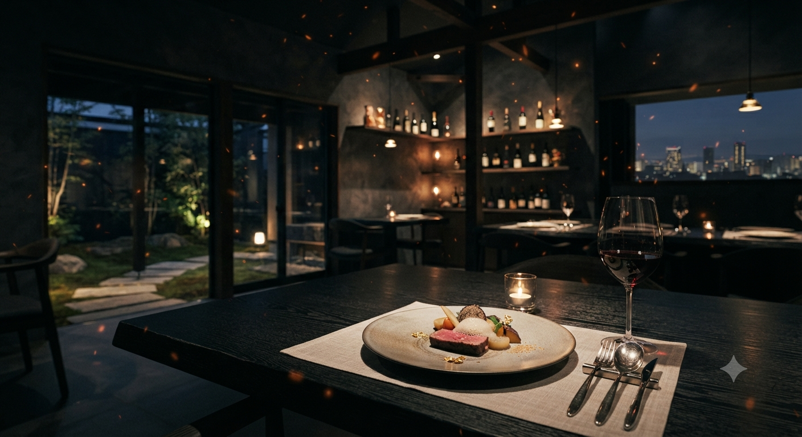
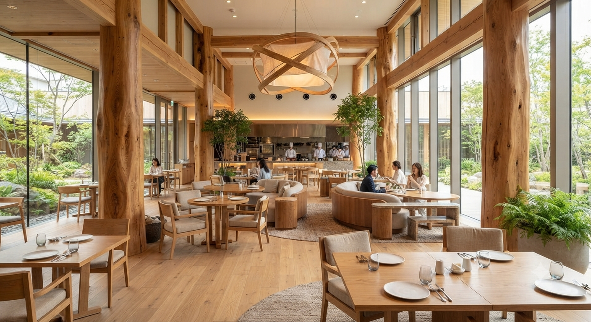

【 完全予約制 】
開運橋のたもと、
螺旋階段の先に広がる
木のぬくもり。
岩手県産の木材に囲まれた吹き抜けの空間。
大型の焙煎機が静かに時を刻み、
素材の味を活かした「優しいイタリアン」が運ばれる。
大切な誰かと、ゆっくりと語り合いたい夜に。
私たちは二、三日前からの約束(予約)を大切に、
最高の一皿をご用意してお待ちしております。
モンテボッカ
岩手県産の木材に囲まれた吹き抜けの空間。
大型の焙煎機が静かに時を刻み、
素材の味を活かした「優しいイタリアン」が運ばれる。
大切な誰かと、ゆっくりと語り合いたい夜に。
私たちは二、三日前からの約束(予約)を大切に、
最高の一皿をご用意してお待ちしております。

大型焙煎機で仕上げるこだわりの一杯。イタリアンと珈琲、両方の魅力を追求しています。

夜の街にありながら、味付けは優しく。健康を気遣う方や、お子様連れでも安心です。

開運橋通を見下ろすテラス席。心地よい風とプロジェクターを備えた開放的な店内。
大型焙煎機が奏でる香ばしいアロマと、木漏れ日が差し込む心地よい空間。
夜の隠れ家から、昼下がりの癒やしへ。モンテボッカのポテンシャルを広げる新サービスを構想中。
焙煎したての豆の個性を最大限に引き出したスペシャルティコーヒーと、店内で焼き上げる素朴で上品な焼き菓子を楽しめる昼間カフェ営業。開運橋を眺めながら贅沢な読書や語らいの時間を。
「おうちでもモンテボッカの味を楽しみたい」という声にお応えし、厳選されたコーヒー豆の量り売りや、街歩きのお供になるこだわりのテイクアウト・ドリップコーヒーの提供を予定しています。
〒020-0026 岩手県盛岡市開運橋通1-16 2F
(開運橋郵便局の2階です)